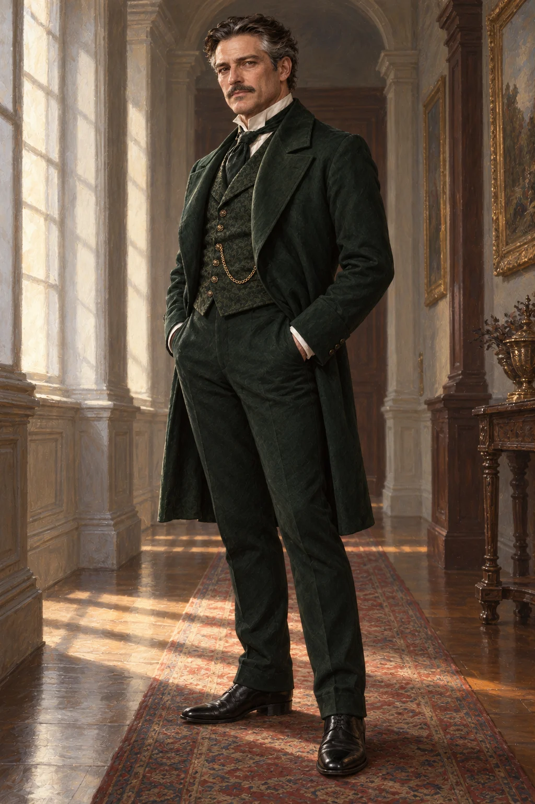

Case comitali · Dinastie · Cast
CAST-465; situazione iniziale 18 maggio 812. Sapere riservato distinto da memorie pre-coma.
Identità e ruolo
Conte, padre di Aurelie; proprietario di terreni lungo una derivazione collegata ai mulini
Età
49
Biografia
Armand crebbe fra il palazzo di Belcour e i lavatoi del ramo meridionale del Leth. Succedette al padre nel 798; una piena nel 801 gli insegnò che un diritto d’acqua senza manutenzione non protegge né rendita né villaggi. Con Lucien Valcienne trattò la ricostruzione di due attraversamenti. L’intesa matrimoniale fra i figli nacque in quel contesto, ma non costituisce una vendita della concessione. Affettuoso in privato e paternalista in pubblico, ricorda nomi e debiti di cortesia con la stessa precisione. Ama restaurare piccoli strumenti di misura. Può chiedere scusa per un tono brusco, più difficilmente ammette di aver confuso protezione e controllo.
Obiettivo
Vuole stabilità commerciale e riconoscimento della casa Belcour
Conflitto
Vuole che almeno un accordo sopravviva anche se il matrimonio salta; questa preferenza non è un complotto né un credito inventato.
Rapporto ricordato con Alexander
Alexander lo frequentò durante visite familiari e discussioni sulle derivazioni. Gli riconosceva pazienza e ospitalità; trovava soffocante il modo in cui anticipava le decisioni di Aurelie. Non esiste una promessa del duca di sposarla contro la sua volontà.
Informazioni riservate
Sta confrontando due pareri sulla continuità di un accordo di transito dopo la morte di Lucien. Non vuole che l’eventuale rottura del fidanzamento trascini anche un contratto economicamente valido.
Stato attuale
Sta preparando un incontro per confermare quali impegni commerciali sopravvivano al lutto.
Limiti
49 anni; umano ordinario. Titolo territoriale, patrimonio privato e aspettative matrimoniali sono distinti.
Evoluzione senza intervento
Prosegue i propri impegni, invia richieste o rinvia decisioni; il silenzio non impone un matrimonio o una catastrofe
Poteri personali
Persona ordinaria; il titolo non conferisce un’Effigy.
Legami
- CAST-001: Interlocutore di Lucien; Alexander ne ricorda ospitalità e pazienza, insieme alla tendenza a parlare delle persone come di accordi futuri.
- CAST-466: Coniugi, patrimoni distinti
- CAST-464: Padre e figlia; Aurelie è primogenita ed erede
Punti di ingresso
- Chiede un incontro sui diritti di transito, distinto dal fidanzamento.
- Un tecnico segnala che una promessa familiare non compare nel contratto commerciale.
Immagine e corporeità
Man49, broad dignified face, dark chestnut hair greying at temples, neat short moustache, brown eyes, medium fair skin, sturdy build. Dark bottle-green 1880 frock coat and waistcoat ivory shirt, understated aristocratic tailoring.
Origine verticale: successione o carriera civile della biografia. Collegamento orizzontale: persone elencate nei legami e territorio di riferimento. Stato Attivo; impatto ordinario 🟡, effetti nazionali soltanto tramite atti e risorse realmente disponibili. Nessuna scelta futura del personaggio o dei PG è chiusa.
Immagini


